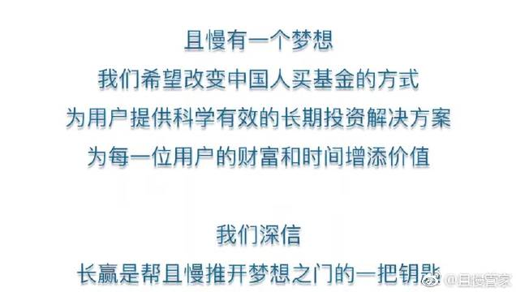
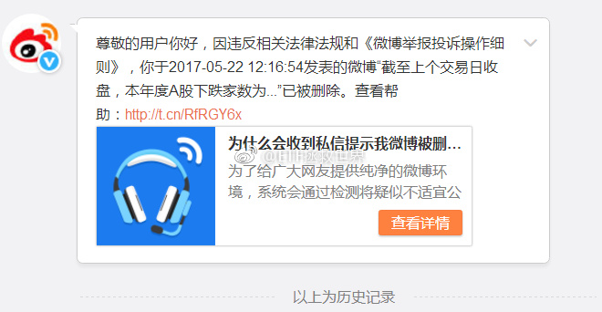
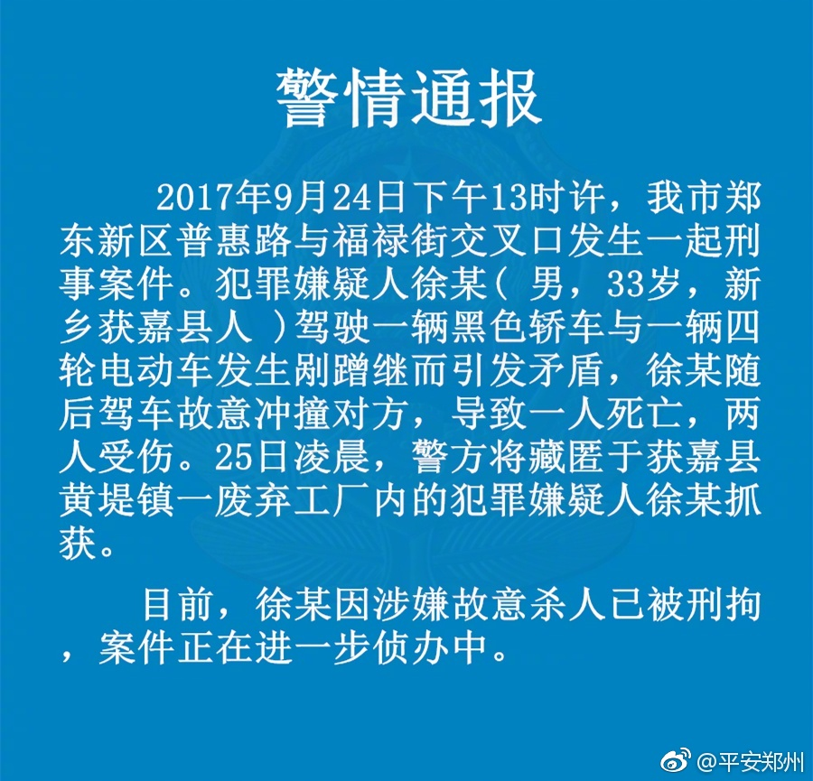

不错，可惜没有美利坚合众国、霓虹、大不列颠及北爱尔兰联合王国、大德意志啊。可以说并不全面。@且慢管家:#投资#您的家乡有没有被ETF计划点亮呢？@ETF拯救世界 且慢管家的秒拍视频  3万次播放 03:24
这是我第一条被删的微博。诡异的是，是5月份发的。什么内容我都忘了，看提示应该是关于涨跌家数的数据分析。这是有人举报了还是什么情况？数据分析也要删？以后可以发什么。其实发不发微博我根本无所谓。就是想知道边界，别因为发微博闹出什么乱子就不好了。 
回复@滚滚磨刀门:拉黑你 //@滚滚磨刀门:我买到了11％的，顶我上去，让我在E大面前嘚瑟一下！！！//@ETF拯救世界:回复@打猎为生的少爷:回购10%。我哭了！//@打猎为生的少爷:回购是疯了吗？---:抱歉，作者已设置仅展示半年内微博，此微博已不可见。
回复@打猎为生的少爷:回购10%。我哭了！//@打猎为生的少爷:回购是疯了吗？//@ETF拯救世界:这个广告里的某家公司2007年发行的基金，目前净值0.75。十年过去了，赔了25%。穷人辛辛苦苦攒点钱，就忽悠进来然后这么糟蹋，这，合适吗。---:抱歉，作者已设置仅展示半年内微博，此微博已不可见。
回复@漓江大雨:我认为能。性格当然有天生的成分，但而更多的可以通过一些方式来改变。比如读书，比如多一些阅历。明白一些道理，看过一些是非，多一份顾虑，很多时候脾气就好了。所以很多人年轻的时候脾气暴躁到了中年以后就会好很多。@平安郑州:#警情通报#我市郑东新区普惠路与福禄街交叉口发生一起刑事案件，犯罪嫌疑人徐某因涉嫌故意杀人已被警方刑拘。 
开个车，出门。高高兴兴。谁知道一家孩子没了，一家故意杀人被抓了。蛮荒故事。是不是很荒唐？一点都不荒唐，每天这样的事情都在上演。各位，出门在外，注意安全。@平安郑州:#警情通报#我市郑东新区普惠路与福禄街交叉口发生一起刑事案件，犯罪嫌疑人徐某因涉嫌故意杀人已被警方刑拘。